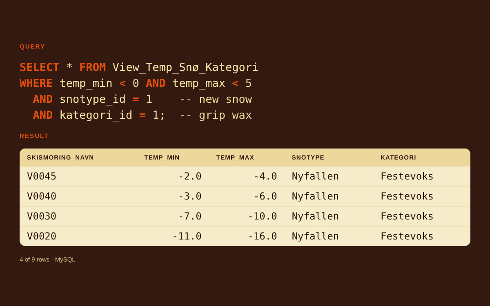
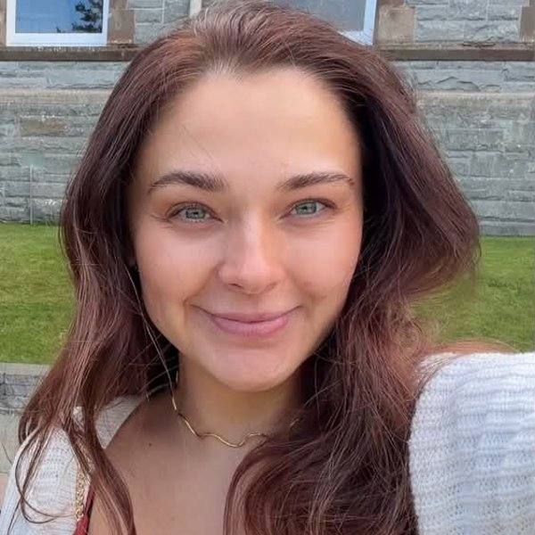
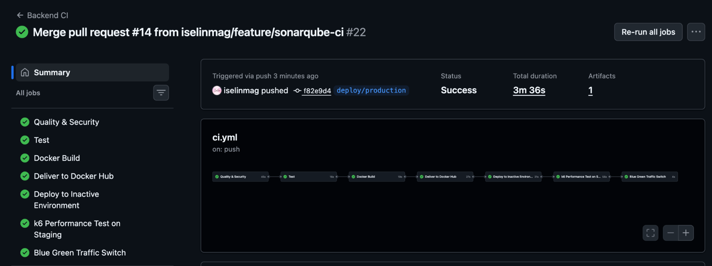
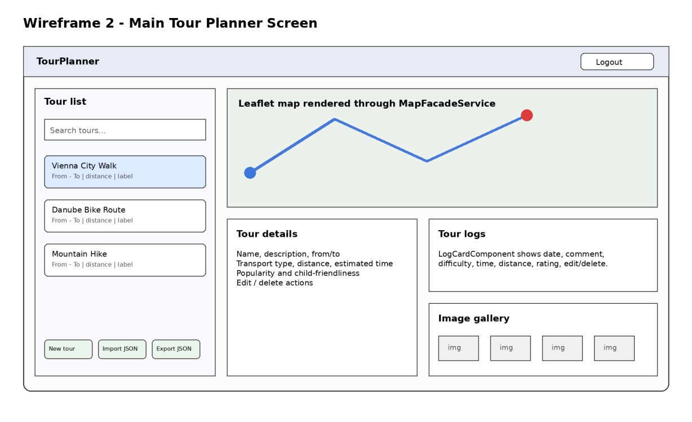

Ski Wax Database
MySQL database that suggests an alternative ski wax based on temperature, snow type, track and skill level.
Normalised to BCNF · real data from Swix · role-based access
MySQL · ER modelling · SQL views

Information Systems student · Final year
I'm in my final year of a bachelor in Information Systems at Østfold University College, specialising in software engineering. Before tech I worked several years as a dental health secretary and in retail, so I'm used to working carefully under time pressure and with people.
Three projects that show how I work as a developer.

MySQL database that suggests an alternative ski wax based on temperature, snow type, track and skill level.
Normalised to BCNF · real data from Swix · role-based access
MySQL · ER modelling · SQL views

REST API with a seven-stage CI/CD pipeline that tests, scans, builds and deploys to AWS with blue/green deployment.
Zero downtime on release · 20/20 tests · 86% coverage
Node.js · Docker · AWS · GitHub Actions

Web app for planning tours and logging trips, with real routes on a map, login, search and a photo gallery.
Layered architecture · 35 unit tests · JWT login
Java · Spring Boot · Angular · PostgreSQL
Design, requirements, frontend and marketing work from my studies.
Requirements
A lecturer's wishes turned into 20 requirements, 15 user stories and 19 BDD scenarios in Gherkin.
Frontend
Responsive three-page shop in plain HTML and CSS, mobile first, with at most 5 divs per page.
UI/UX · Project lead
Wearable prototype that guides people around campus with light, sound and vibration.
UX design
App concept for eco-friendly laundry, from survey and personas to a tested Figma prototype.
Digital marketing
Campaign plan with personas, customer journey, ads for five channels and a landing page.
Up next · Spring 2027
AI speech-to-text and real-time documentation for out-of-hours emergency call centres.
Operators at emergency call centres have to listen, assess and write notes at the same time, often under heavy pressure. Our team of four will test Norwegian speech-to-text models that can run locally, since patient calls cannot be processed in the cloud. The goal is a prototype that fills in the fields of the operator's checklist as the call goes on, so the operator only confirms or corrects.
The tools I use most. Each project lists the full stack it was built with.
2024 – 2027
Bachelor in Information Systems, specialising in Software Engineering
Jan 2026 – Jul 2026
2022 – 2023
Authorised dental health secretary
2022 – 2025
Dental health secretary (on call and substitute). Received patients, assisted the dentist during treatment and kept the clinic sterile.
2023 – 2025
Sales associate
2022 – 2023
Store associate with responsibility for locking up
2020 – 2022
Shop assistant responsible for sales, daily routines and cash settlement. In my last year I took on extra responsibility for routines, sales and motivating colleagues, on my own initiative.
2019 – 2020
Store associate
Built by hand in plain HTML and CSS, mobile first, without frameworks. Every change runs through a pipeline in GitHub Actions that validates the HTML, checks every link and tests all pages against WCAG 2 level AA. The site is only published when all tests pass.
The first accessibility test found 74 errors, mostly orange text with too little contrast. Fixing them is why links on this site are a darker orange.